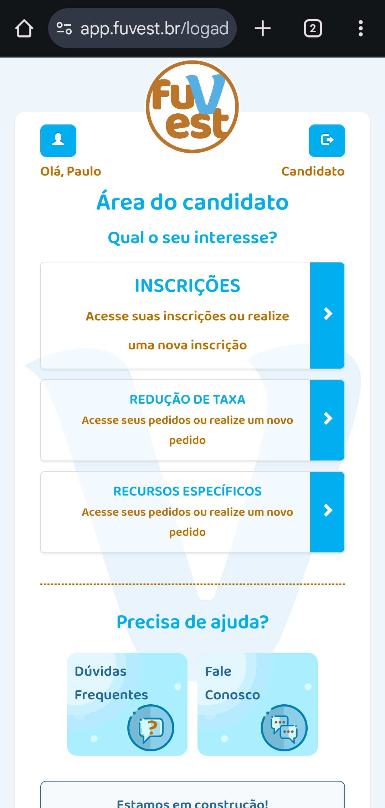
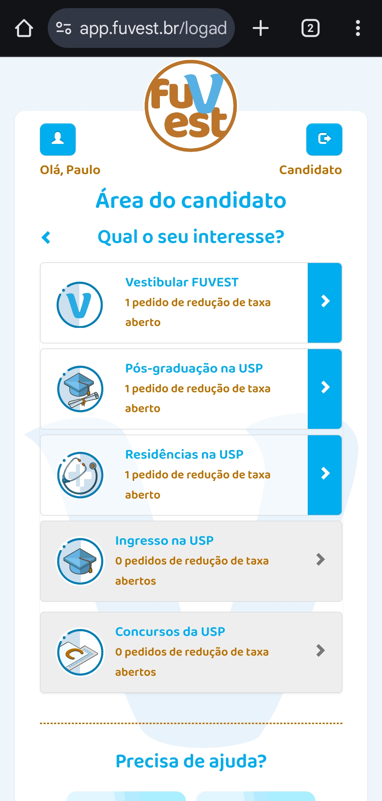
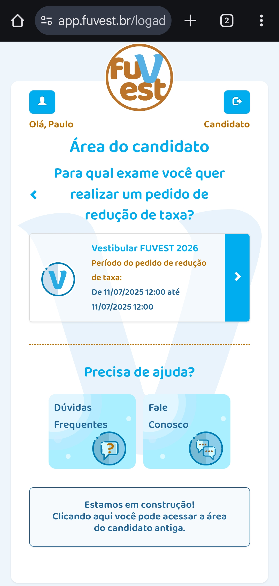
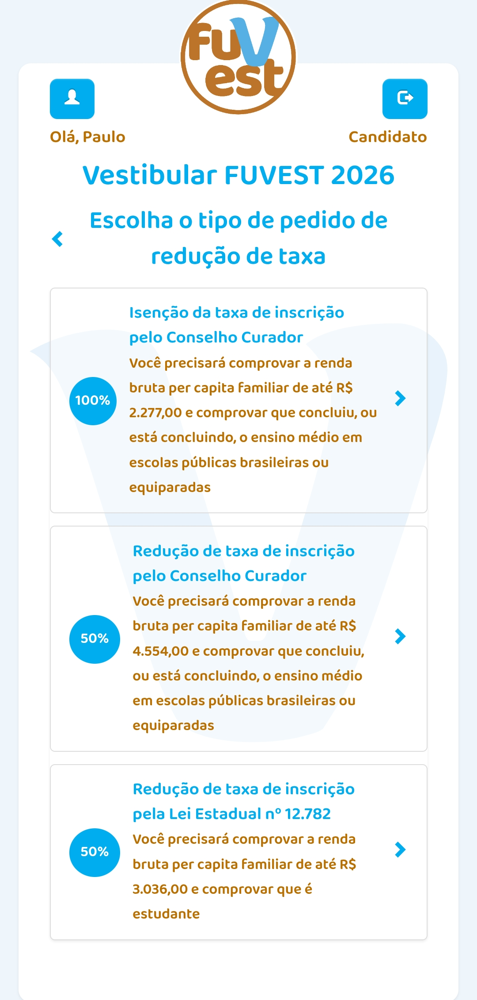
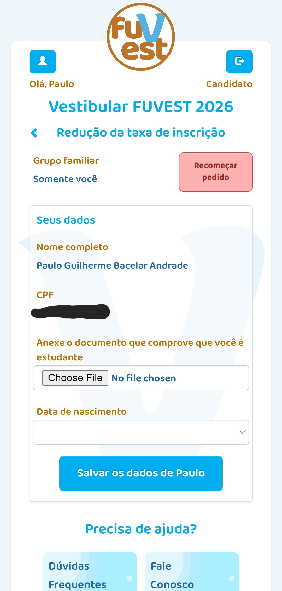
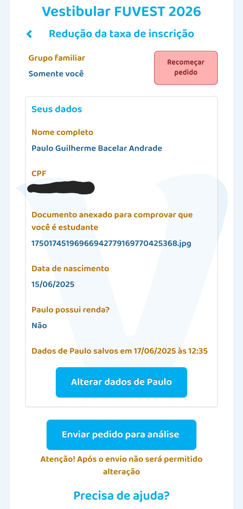

Redução parcial (50% da taxa): caso possua renda familiar per capita de até R$ 3.036, com o(a) estudante matriculado(a) em qualquer escola, universidade ou cursinho pré-vestibular, incluindo cursinhos populares.
Redução parcial (50% da taxa): caso possua renda familar per capita de até R$ 4.554, com o(a) estudante tendo cursado ensino médio completamente em escola pública ou equiparadas*.
Isenção total: caso possua renda familiar per capita de até R$ 2.277, com o(a) estudante tendo cursado ensino médio completamente em escola pública ou equiparadas*.
*Nesse caso, estudantes das escolas equiparadas se referem a:
Alunos das escolas não pertencentes à rede pública de ensino, mas que mantenham educação gratuita.
Estudantes das escolas pertencentes ao Sistema Senai, Sesi ou Senac.
Candidatos(as) de escola particular em que o(a) estudante tiver conquistado bolsa de estudos integral ou superior a 50% do valor da mensalidade.
🛠️ Passo a passo para solicitar isenção/redução de taxa
Tendo feito o login, clique no botão “redução de taxa” 
Após isso, clique no botão “Quero fazer um novo pedido de redução de taxa
Selecione o campo “Vestibular FUVEST” 
Logo depois, selecione o botão Vestibular Fuvest (ano do exame) 
Em seguida, selecione na opção em que você se encaixa:
Isenção total: renda familiar per capita de até R$ 2.277, com o(a) estudante tendo cursado ensino médio completamente em escola pública ou equiparadas.
Redução parcial (50% da taxa): renda familar per capita de até R$ 4.554, com o(a) estudante tendo cursado ensino médio completamente em escola pública ou equiparadas.
Redução parcial (50% da taxa): renda familiar per capita de até R$ 3.036, com matrícula em qualquer escola, universidade ou cursinho pré-vestibular, incluindo cursinhos populares.

*Nesse caso, estudantes das escolas equiparadas se referem a:
Alunos das escolas não pertencentes à rede pública de ensino, mas que mantenham educação gratuita.
Estudantes das escolas pertencentes ao Sistema Senai, Sesi ou Senac.
Candidatos(as) de escola particular em que o(a) estudante tiver conquistado bolsa de estudos integral ou superior a 50% do valor da mensalidade.
Por último, será apresentado a você um formulário sobre a sua situação. Você deverá informar a sua renda familiar, enviar documento comprobatório e enviar o seu comprovante de matrícula. Após preencher os dados necessários, clique em “salvar dados de [seu nome]”

Fuvest - form
Finalmente, basta verificar se os dados estão corridos e apertar o botão “enviar pedido para análise” 
A isenção não garante a inscrição na Fuvest. Após a divulgação do resultado, os(as) candidatos(as) aprovados(as) devem realizar a inscrição no período estipulado.
📞 Dúvidas ou suporte
Central de Atendimento da Fuvest: (11) 3093-2300.
Horário de atendimento: dias úteis, das 9h às 12h e das 13h às 17h.